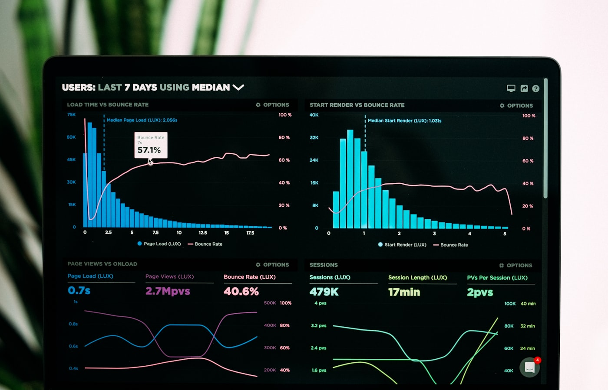
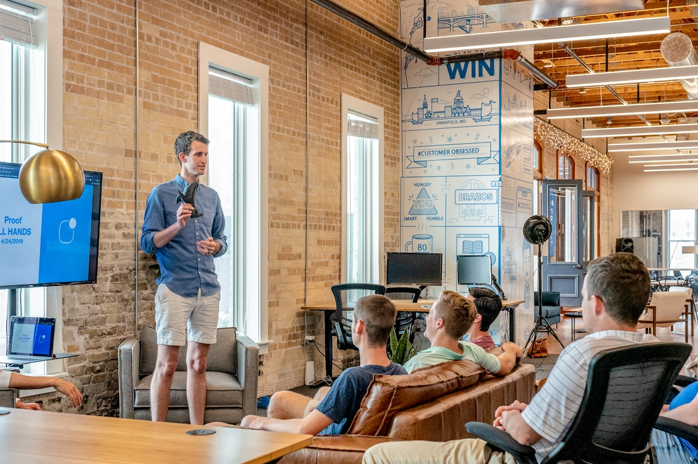

AI you can actually deploy.
Real agent loops with tool-use. 90+ tools across 9 business modules. ClickHouse-backed RAG over your data. Three-tier safety gates, full token & cost observability, Haiku → Sonnet fallback on overload. Engineered on Anthropic Claude — not glued together from frameworks.
No multi-provider hedging, no framework abstractions. Direct integration with Claude Haiku 4.5 + Sonnet 4.5 via custom AnthropicClient.
Four things we ship, end-to-end.
Not demos. Not POCs. AI that takes action against real systems, has audit trails, rate limits, retries, fallbacks, observability — the same engineering bar we hold the rest of the stack to.

Agents wired to your systems.
Multi-turn agent loops (up to 40 tool rounds) that triage tickets, draft replies, reconcile data, approve POs, run nightly close-of-books. Tool-use against your real APIs — declarative [CopilotTool] attributes auto-expose controller actions as Claude tools, with JSON Schema generated at startup.
- Streaming via SSE
- 60 tools/min rate limit
- Auto conversation summary
- Session-scoped audit trail

Grounded in your data, not the public web.
ClickHouse-backed vector store with bge-small-en embeddings. Cosine similarity retrieval, top-K configurable. Used in production for questionnaire mapping, file question groups, research insights — semantic search across structured and unstructured client data.
- Column-oriented vector store
- Citation-first answers
- Per-tenant embedding tables
- Async ingestion pipelines

Pipelines, not prompts.
Long-running AI work runs as stage-by-stage background jobs through AIEngine.JobQueueService. Each stage logs progress, retries on transient errors, leaves a trace you can debug. Production examples: open-end coding (claim_centric_batch_v2), questionnaire extraction, FGD analysis, secondary research generation.
- Job queue + processor
- Stage-level status polling
- Replayable runs
- Anthropic Batch API ready

Already running in production.
Every Ragenaizer module exposes its actions as agent tools. Talk to your books in Accounts. Run payroll from HRMS. Approve a PO in Procurement. Generate research insights without leaving the chat. Same agent loop, woven into nine modules — not a "ChatGPT for X" bolt-on.
See RagenaizerA real agent loop, not a wrapper.
Custom orchestrator (CopilotService) directly on the Anthropic Messages API. No LangChain, no Semantic Kernel — tight control, minimal latency, and one place to debug.
The boring parts that matter.
Three things shipped agents need that demos don't: can't break prod, can't burn budget, can't go silently wrong. Here's how we handle each.
Three-tier confirmation gates.
Tool safety auto-inferred from HTTP method; explicit override available. Confirmation gates are machine-enforced — the LLM cannot bypass them.
Every call costed and logged.
The ai_token_usage table records every LLM call — async fire-and-forget so it never blocks the main flow.
model · call_type
input_tokens · output_tokens
cache_creation · cache_read
latency_ms · http_status
error_type · cost_inr
Cheap, cached, never down.
Prompt caching cuts cost dramatically on stable system prompts. Model fallback kicks in on overload — agents keep running through Anthropic incidents.
- →Prompt caching via anthropic-beta — per-tenant cache keys.
- →Default Haiku 4.5 for tool loops · Sonnet 4.5 for hard reasoning.
- →Auto-fallback Haiku → Sonnet on 529 overload.
- →Batch API support for long-running research (50% discount).
Nine modules. Real tools.
Tool counts below reflect what's actually exposed to the LLM in our production Ragenaizer build. Sample tool names per module — there are more.

Talk to your books.
- → create_purchase_order · approve · convert_to_bill
- → approve_expense_claim · reimburse
- → run_depreciation · close_fiscal_year

Payroll on demand.
- → run_payroll · approve_leave
- → regularise_attendance · process_claims
- → policy_qna · onboard_employee
Move projects forward.
- → create_task · assign · move_to_done
- → log_time · status_rollup
- → generate_standup · risk_flag

Pipeline that thinks.
- → create_activity · log_call · get_pipeline_summary
- → lead_discovery · qualify
- → get_crm_dashboard · smart_filter

Async insight pipelines.
- → generate_secondary_research
- → generate_research_insights
- → auto_generate_codeframe · FGD pipeline
RFQ → PO → pay.
- → create_rfq · short-list · negotiate
- → vendor_compare · approve_po
- → chain: vendor → bill → approve → pay
Courses + quizzes.
- → create_course · create_lesson
- → enroll · publish · cohort_announce
- → generate_quiz · grade_attempt

Meetings, captured.
- → start_recording · transcribe_session
- → generate_summary · action_items
- → attach_to_crm · attach_to_pms

Find things by meaning.
- → list · share · move · copy
- → semantic_find · summarise_doc
- → extract_table · tag_auto
What it's built on.
Deliberately small. No framework abstractions, no multi-provider hedging — Anthropic Claude directly over HTTP. The custom orchestrator is ~one file you can read in an afternoon.
Two ways to get this.
Custom agents wired to your existing stack — or license Ragenaizer and get the whole agent infrastructure pre-wired into nine modules from day one.
- →You have your own systems — ERP, CRM, in-house ops tools — that the agent must drive.
- →You need agents fluent in your specific domain language and workflows.
- →Data residency, compliance, or self-host requirements rule out a SaaS bot.
- →The automation is a moat — what you're building isn't generic.
- →You want agents over HRMS / CRM / Accounts / PMS today, not next quarter.
- →The workflows match the 90+ tools we've already shipped.
- →You'd rather let us maintain the AI plumbing and just use it.
- →You can always pair custom builds with Ragenaizer modules later.
What should your agents do for you?
One conversation. We tell you which slice is worth automating, which slice isn't, and what shape the agent loop should take.